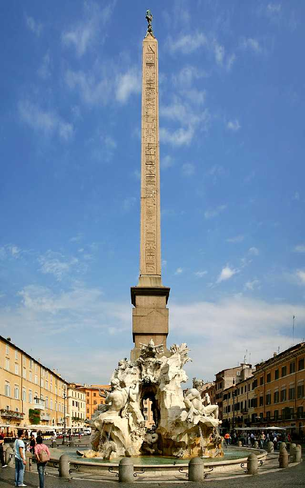
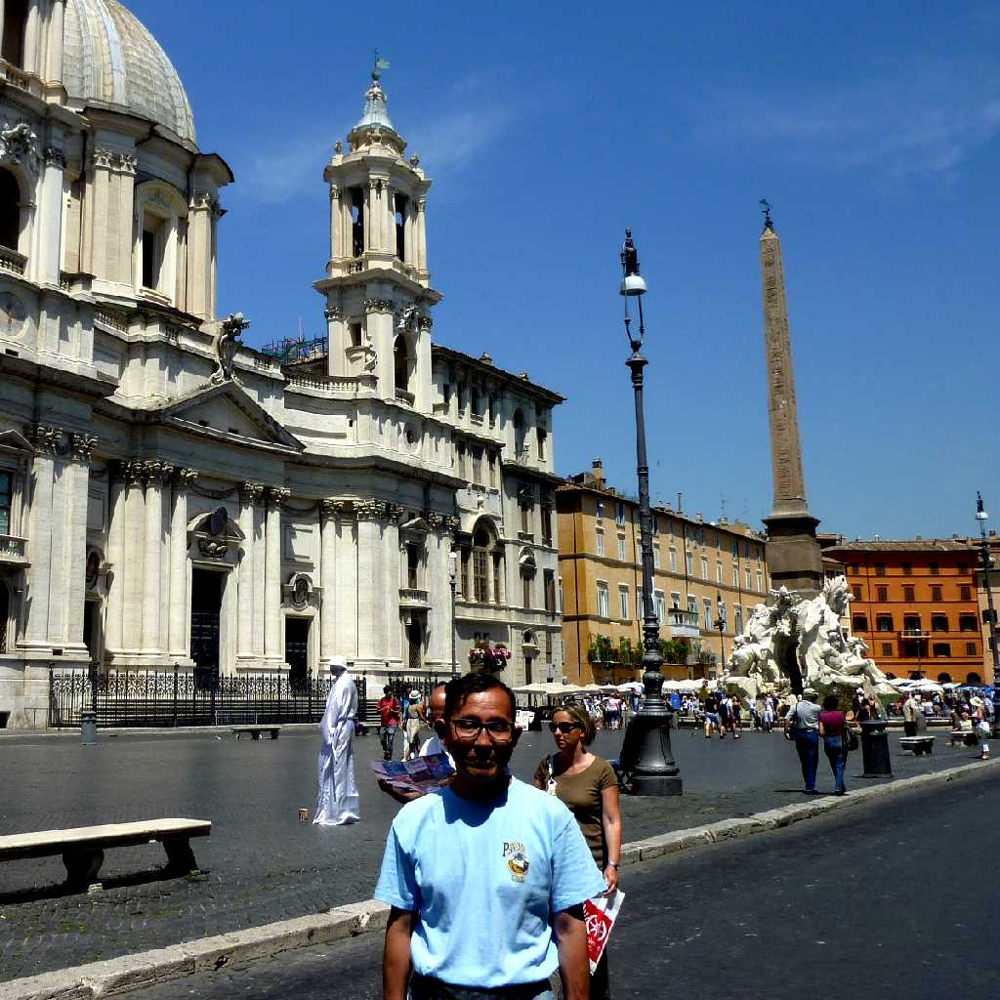
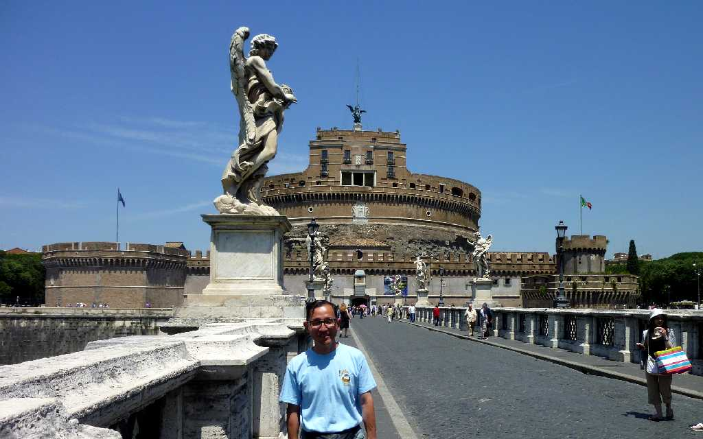
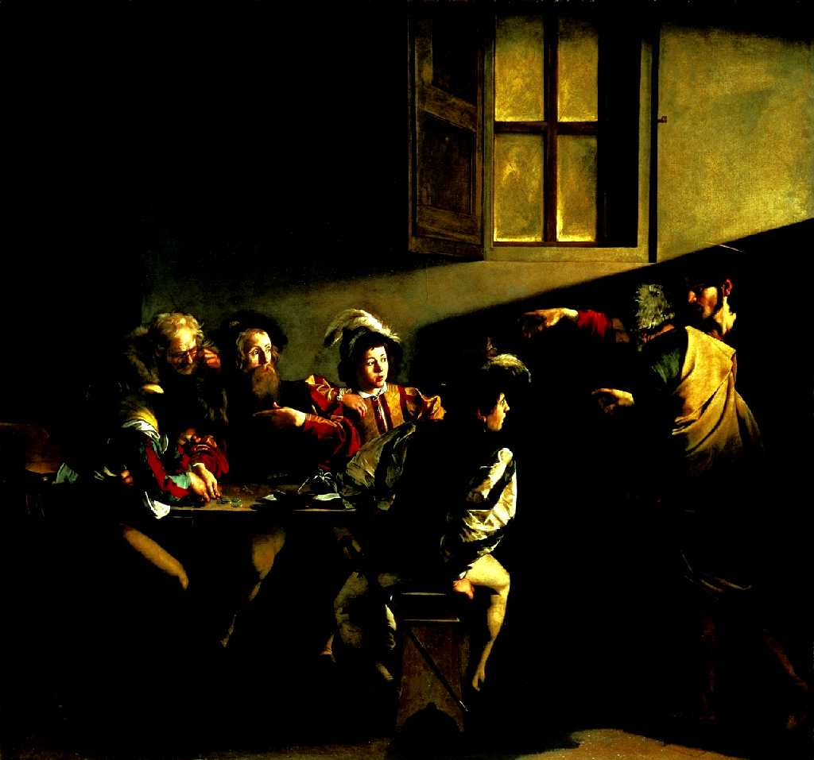
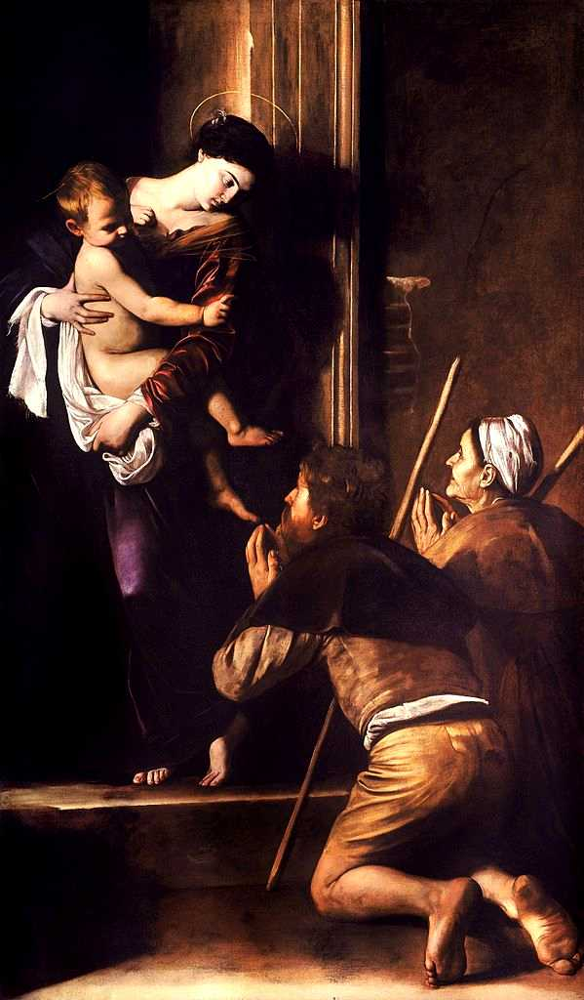

Fontana dei Quattro Fiumi Piazza Navona Roma
１世紀頃創られた競技場跡のナヴォーナ広場 ナイル川ガンジス川ドナウ川ラプラタ川の四大河を擬人化した噴水のオペリスク

June 23 2011 Piazza Navona

June 23 2011 Ponte Sant'Angelo
２世紀にハドリアヌス帝により創られた橋で１７世紀にローマ教皇クレメンス９世がベルニーニに依頼し欄干に天使の彫刻を飾り付けた

Caravaggio The Calling of Saint Matthew San Luigi dei Francesi
サンルイージディフランチェージ聖堂コンタレッリ礼拝堂 カラヴァッジョ作 聖マタイの召命

Caravaggio Madonna di Loreto Chiesa di Sant'Agostino
聖アゴスティーノ教会 カラヴァッジョ作 ロレートの聖母